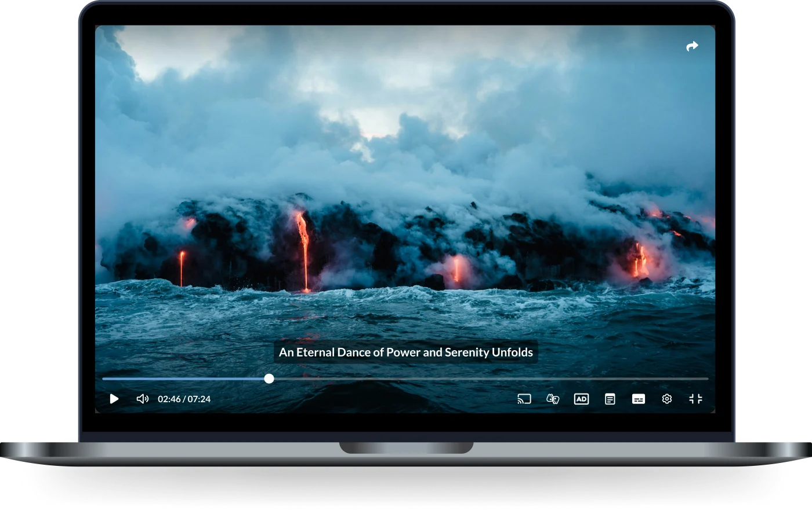
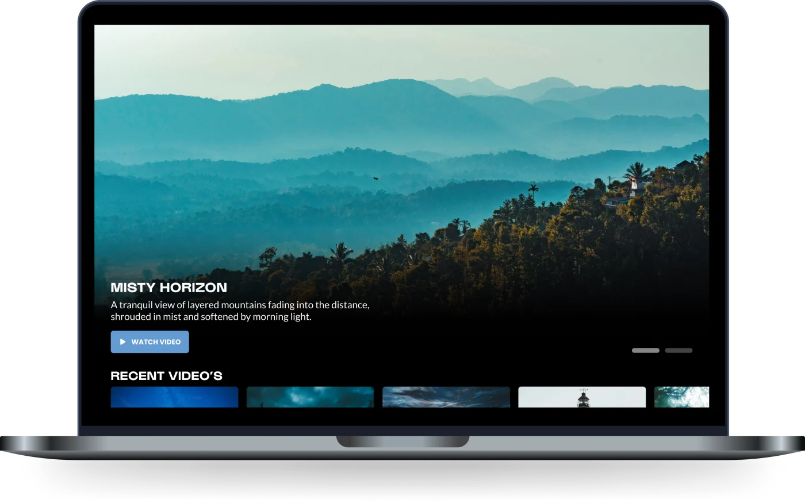
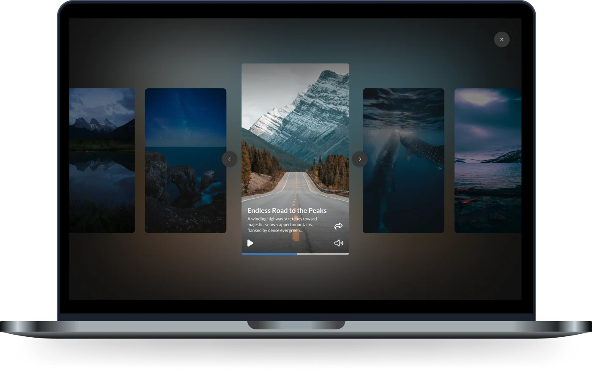
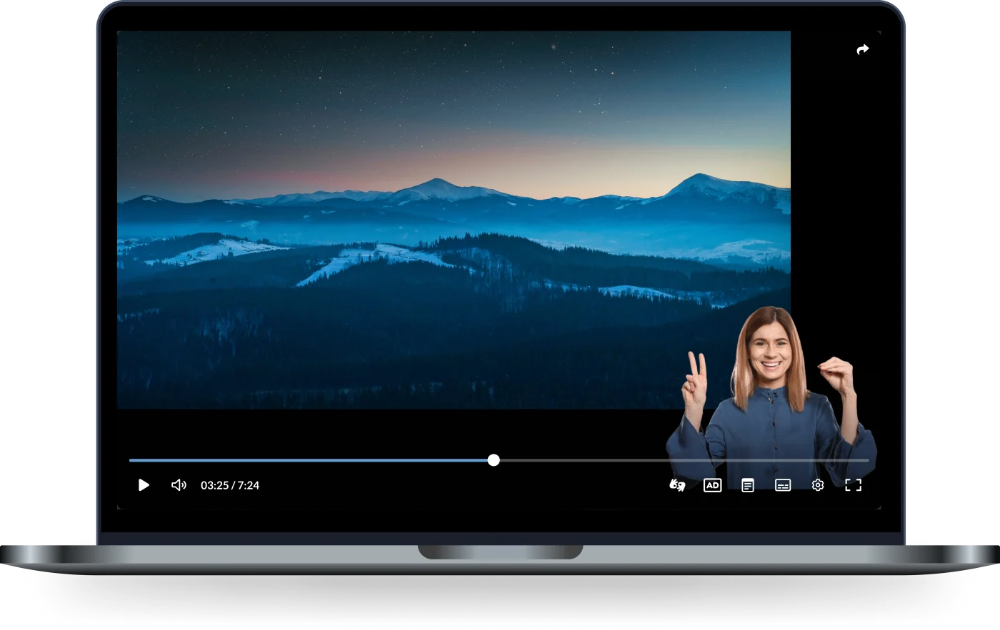

Player
A selection of examples of our video player showcasing the different configuration and functional options.
View showcases
Channels
Video pages and content overviews. Playlists, carousels, categories and search, styled to sit inside any brand.
View showcases
Shorts
Vertical video the way an audience already knows it: swipe feeds, stories and snackable clips built for mobile first.
View showcases
Accessibility
Examples of captions, audio description, keyboard navigation and screen reader support, all shown working in a live player.
View showcases